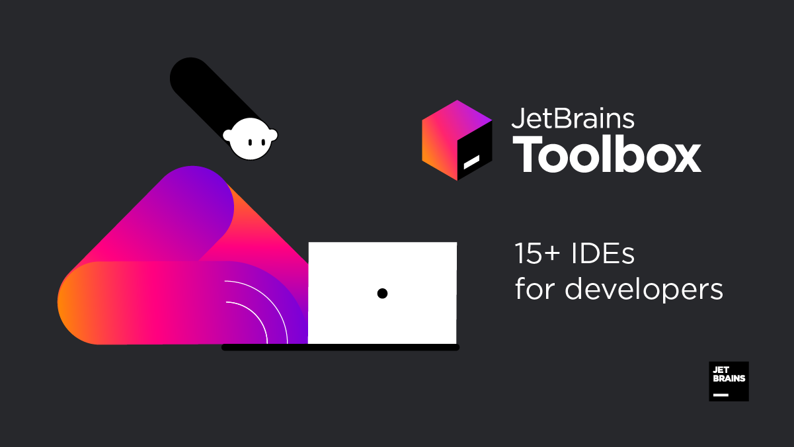
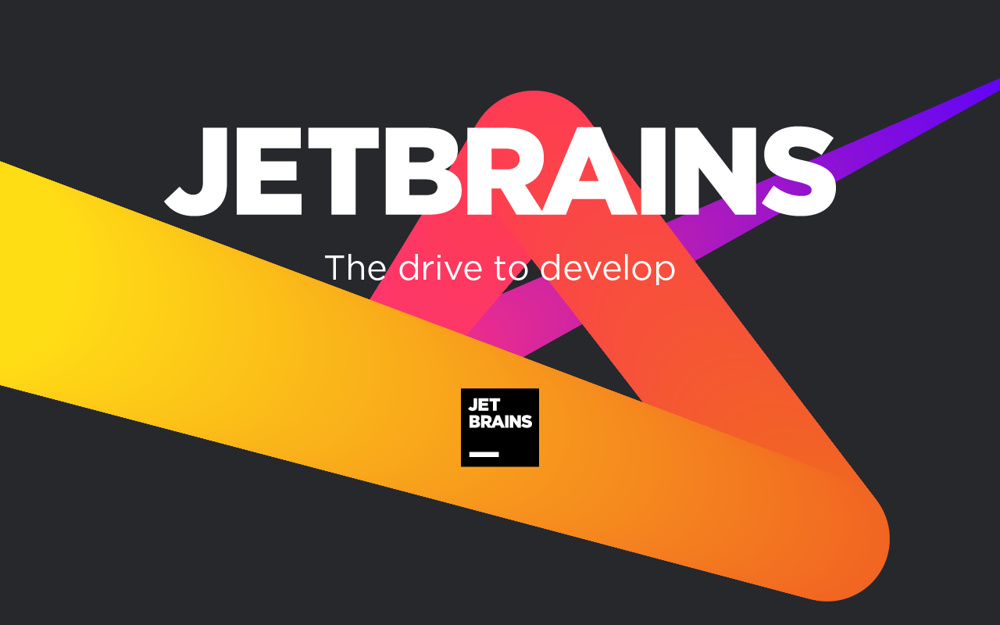

JetBrains ToolBox

JetBrains ToolBox — это набор профессиональных инструментов разработчика для разных языков и технологий. В Toolbox входит больше 15 инструментов для профессиональной разработки.
Каждый инструмент разработан специально для конкретной технологии, все инструменты регулярно обновляются, отражая свежие изменения в технологиях.
Toolbox включает в себя бесплатные версии популярных сред разработки для Python и Java, а также предоставляет инструменты для обучения программированию на Python, Java и Kotlin.
О компании
JetBrains (ранее — IntelliJ) — международная компания, которая разрабатывает инструменты для разработки на языках Java, Kotlin, C#, F#, C++, Ruby, Python, PHP, JavaScript и многих других, а также средства командной работы.
JetBrains основана в 2000 году. Главный офис расположен в Праге. Основатели: Сергей Дмитриев, Евгений Беляев и Валентин Кипятков.
Также компания разрабатывает и поддерживает учебные приложения с интегрированной средой разработки для упрощённого взаимодействия начинающего пользователя со средой.
В этих приложениях предустановлен плагин для самообучения, а также есть возможность проводить учебные занятия с преподавателем. Одной из главных отличий этой серии приложений является то, что учебная версия среды абсолютно бесплатна для любого пользователя.
О таких средах более подробно рассказано в видео ниже:
Наиболее известный продукт JetBrains — интегрированная среда разработки IntelliJ IDEA.
В 2009 году JetBrains открыла код платформы IntelliJ, на которой основана IntelliJ IDEA, и выпустила бесплатную версию IntelliJ IDEA Community Edition.
С 2010 года компания разрабатывает язык программирования Kotlin. В мае 2017 года компания Google сообщила, что включает поддержку Kotlin в Android Studio 3.0 — официальный инструмент разработки для ОС Android.
Доступные приложения
Сегодня ToolBox предлагает следующие основные приложения для разработки:
- AppCode
- CLion — Кросс-платформенная среда для разработки на C/C++
- DataGrip — IDE для баз данных и SQL
- Datalore — Онлайн-среда для Jupyter-ноутбуков
- DataSpell — IDE для Data Science
- ReSharper
- dotPeek
- dotCover
- dotMemory
- dotTrace
- GoLand
- IntelliJ IDEA — Умная IDE для Java
- PhpStorm — Умная IDE для PHP и веб-разработки
- PyCharm — IDE для разработки на Python
- ReSharper
- Rider
- RubyMine — IDE для Ruby и Rails
- WebStorm

На следующих страницах будут размещены статьи про приложения для разработок, доступные в ToolBox, которые чаще всего используются мною для разработки и написания учебных кодов.